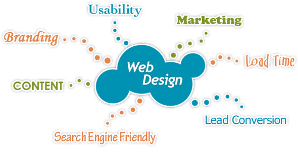

| Thoughts and Ideas | ||||
|---|---|---|---|---|
| As I started to think about how I wanted to design my website, I thought about what would represent me. For one, my favourite colour is blue, so I immediately thought that I have to somehow implement that into my website, and what better way to do that than by implementing it into my header and footer. I also had an idea for what I wanted my website to include based off of my assignment from a class I had taken in my 2nd year at the Sheridan College - Trafalgar, CCT260. The assignment had us make a portfolio website for ourselves and I used that as a rough template as to how I wanted to design my website, such as where I wanted to place my top navigation and my social media icons within my footer. With an idea of how I wanted to design my website, I created a wireframe which can be accessed by clicking the following link (HOMEPAGE WIREFRAME). There were many problems I encountered during the process of designing my website, the biggest being for mobile optimization so that anyone is able to access the website which I will go more in detail about within the accessibility. Other than that, my main problem was my carousel within the "My Work" pages as it seems that Bootstrap is only able to have 5 images work within a carousel and then it either crashes or loops back from the 1st image to the 5th image. I later realized that the problem was actually a misplaced div tag and it was crashing the carousel, which now works as it should. I also encountered many other problems as this is my first time ever dealing with Bootstrap thoroughly, as it has many properties that can be implemented into the code, so because of this reason, it took a lot of effort going through various sources finding out what each thing does. | ||||
| Website Accessibility | ||||
 |
While thinking about how I was going to design my website, another thing I head in my mind the whole time was how would I make it so that anyone can access my website. To begin with, I made sure that all of my images had alt tags as there may be screenreaders within the website, or someone may not have an image load, and due to that, they would not know what they are unable to view. Having alt tags, in my opinion, is a necessity. It is always best practice as it can cause a better impression on the general public as you never know who is going to be accessing your website. The other thing I made sure to check was my color contrast. As you can see, most of my website follows a pattern of a custom shade of blue, as well as a custom grey and other greys that are the defaults. I checked the colour contrasts to see if it would work well for a blue background and black foreground as you can see above on my navigation, and it passed all the tests using the WEBAIM Contrast Checker. Due to this, I went forward with this colour scheme. I also checked for white foreground, but that had seemed to fail a lot of tests. However, it seems easy to other people I asked for opinions from to read and due to that, I went forward with having white labels for my active webpage. I also made sure that the website was mobile friendly as there may be people coming on the website that only use a mobile device and cannot access the full webpage. I had many problems for some places to properly wrap and contain image sizes properly, but through the use of media queries, I was able to make it so that the images and everything is formatted properly and is all legible. I also designed my navigation in such a way so that everything seems to flow well, such as my redirectable logo to the homepage is on the left and the menu options are all on the right. This also matches up with the mobile view as the hamburger icon is on the right and then opens the menu items on the right. One other thing I made sure to have within my website was text that could be read without effort. All of the types of fonts I have implemented within my design are either some sort of serif or sans serif which I found through the use of Google Fonts. | |||
| Page Typologies | ||||
|  | As I made my website, I thought about what the best type of typologies would be for each corresponding section. Out of 7 different page typologies to choose from, I have implemented 5 of those typologies within my website. To begin with, my homepage is part of the landing page typology. Going from right to left (or from top to bottom on mobile) in my top navigation, I then have my Resume page. This page holds the typology style of a tabular content page, or a page that uses tables. The next are the two pages I have within my "My Work" dropdown menu, "2nd Year" and "3rd Year." Both of these pages use a photo-rich typology as they both are full of images. They also have disclosure implemented in them as they open to carousels within modals. The next page is the "About" page, which uses the typology of content-heavy. This page is full of both text and images which gives it an equal balance of content and pictures. The last page is the "Contact" page. The implemented style within this is what it should be, a form page. As you can see, this "Process" page has two different types of page typologies implemented into one. It uses tabular content, as well as being a content heavy page at the same time. | |||
| References | ||||
| Fonts | Google Fonts | Fjalla One | Bitter | |
| Bootstrap | Bootstrap Documentation | |||
| Footer SVGs | LinkedIn SVG | Twitter SVG | Instagram SVG | |
| Other Links and Images | Contact Page Background (Edited to be grey) | UTM Image | Trillium Hospital Image | |
| Other Links and Images Continued | Idea Image (Process Page) | Accessibility Image (Process Page) | Typology Image (Process Page) | |
{kind=link}